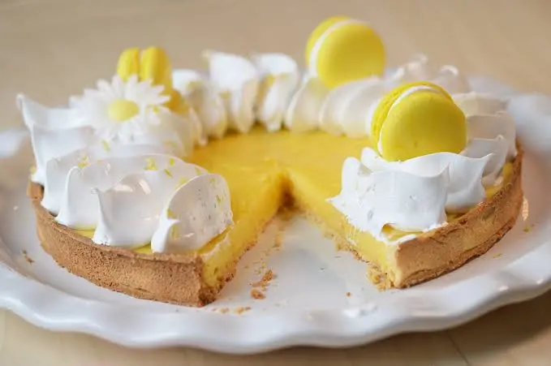

Tarte Au Citron

Ingredients
- 250 g de farine
- 150 g de beurre
- 50 g de sucre
- 50 g sucre glace
- 1 oeuf
- 1 pincée de sel
- 150 ml de jus de citron soit 3 ou 4 citrons
- zeste d'un citron
- 150 g de sucre ou moins selon votre goût
- 3 oeufs
- 1 c. à soupe de maizéna ou farine
- 75g de beurre
- 2 blancs d'oeufs (ou 3 petits)
- 75 g de sucre
- Battez l'oeuf avec les sucres et le sel
- Ajoutez la farine en 1 fois, pétrissez du bout des doigts
- Ajoutez le beurre mou en morceaux, pétrissez rapidement et formez une boule
- Filmez et mettez au frais au moins 1 heure
- Étalez dans le plat à tarte, recouvrez d'une feuille de papier sulfurisé et d'haricots, de billes d'argile ou d'une chaîne de billes métalliques disponible en grandes surfaces
- Faites cuire 10 minutes à 180°C, puis enlevez le "poids" et remettez 8-10 minutes pour bien cuire le centre. La pâte doit être dorée (sinon prliongez la cuisson de quelques minutes)
- Réservez.